Soapomorph
The Soapomorph is an interactive, horror-themed soap dispensing system designed specifically for use in immersive horror theme park environments.
The primary goal of the Soapomorph is to blend functionality with entertainment, reinforcing the theme park's narrative even in transitional spaces such as bathrooms.
The Soapomorph is intended to be safe, durable, easy to maintain, and disassemble. Please note, this is only a prototype.
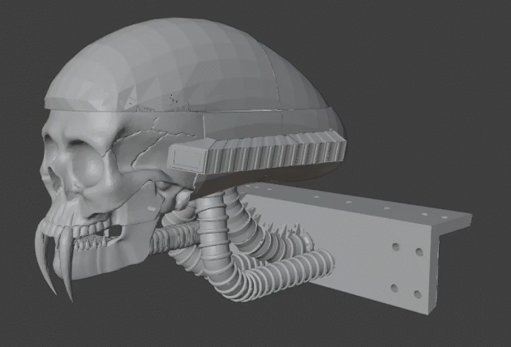
MISSION OBJECTIVES
- ▶Objective 1 — Reflective Narrative of Product development
- ▶Objective 2 — Critical Appraisal of the Techniques Explored
- ▶Objective 3 — Appropriate Presentation and inclusion of Designs and Artefacts
- ▶Objective 4 — Create a Physical Artifact
MISSION PARAMETERS
ACTIVE ASSETS
PHASE 01
Hand Sketching & Conceptual Design
Used for design concepts before committing to CAD. Effective because it's fast and allows quick iterations but lacks precision and 3D visualizations.
PROCESSReference Image Analysis
Used to establish a direction and inform design proportions. Effective because it provides proven design inspirations. Limitations: risk of over-copying.
RESOURCEPaint Software Annotations
Used to digitally annotate reference images. Effective because annotations are saved and easily shareable, but has low precision for dimensional design.
SOFTWAREBrainstorming & Discussion Sessions
Used to evaluate multiple project concepts. Good for team debates but can be time consuming and require strong facilitation.
PROCESSPneumatic Pump Research & Concept
Pneumatics offer powerful and controlled actuation but are complex in use and require compressed air storage for operation.
COMPONENTGantt Chart & MOSCOW Matrix
Used to plan project timeline and prioritize features. Effective to visualize planning but need to be revised often as project progresses.
PLANNINGMaterial Selection Discussion
Discussed PLA, ABS, foam and silicone for different components. Each material offers distinct properties for specific use cases.
MATERIALPHASE 02
3D Scanning
Used to capture skull geometry as design reference. Effective because scanning is faster than manual modelling but scan quality depends on hardware.
HARDWAREBlender CAD Modelling
Used to create detailed 3D models of skull structure. Enables precise dimension control and flexibility between artistic and mechanical designs.
SOFTWAREFusion 360
Cloud-based CAD used for the mechanism design. Strong mechanical design capabilities with free educational tier. Provided good balance of power and usability.
SOFTWAREMagnetic Housing Design
Designed for detachable top using magnets. Effective because magnets provide secure yet removable assembly, but magnetic strength must be calculated.
COMPONENTPrototype Tongue 3D Printing
Printed sample Xenomorph tongue to validate scale and fastening approach. This reveals fit and scale issues early in design.
PROCESSInternal Tube & Bracket Design
Designed throat-like tendril structure for soap tube routing and mechanical support. Integrated design reduces components but is difficult to print.
COMPONENTJaw Mechanism Exploration
Evaluated gear system vs jaw-tongue integration. Without physical prototypes, selection was based on theory rather than experience.
DESIGNTechnical Drawing & Documentation
Created 2D projections and assembly diagrams. Drawings communicate precise dimensions but can misrepresent 3D complexity.
DOCUMENTATIONDesign Iteration & Refinement
Multiple iterations of skull design incorporating feedback. Improves quality but is time-consuming and requires version control.
PROCESSPHASE 03
Blender CAD Modelling
Mechanism design finalized jaw opening mechanism and piston-style tongue extension. Digital simulation doesn't account for real-world friction.
SOFTWAREDesign-to-Base Compatibility
Modified skull design to integrate with wooden prototype base. Early physical prototype reveals interface issues early.
DESIGNWooden Base Prototype
Built scrap wood prototype with hinge-mounted soap door. Validates base dimensions but doesn't represent final manufacturing design.
PROTOTYPESTL File Export
Prepared final CAD models for 3D printing by converting to STL format. Universal format but export can introduce geometry errors.
PROCESSSupport Structure & Orientation Planning
Planned print orientation and support placement. Good planning reduces waste but plans often need adjustment during actual printing.
PLANNINGMechanism Animation in Blender
Created animation showing jaw opening and closing with tongue piston movement. Verifies mechanism function before manufacturing.
VISUALIZATIONDesign Segmentation Strategy
Began planning division of full assembly into smaller printable segments with connector holes. Enables modular assembly.
STRATEGYPHASE 04
3D Printing (PP Attempt)
Attempted to print full assembly using polypropylene filament. Print failed approximately 30% through due to filament degradation from storage.
PROCESSPolypropylene (PP) Filament
Material selected for initial print for chemical resistance properties. Older stored filament becomes brittle causing print failure.
MATERIALBudget & Approval Process
Requested printing budgets from University. Approval delays meant second attempt was denied before deadline approached.
ADMINDesign Segmentation & Modular Assembly
Redesigned full assembly into smaller printable segments with alignment holes similar to Lego blocks. Enables reliable mechanical connection.
DESIGNJaw Mechanism Finalization
Completed detailed design of jaw-as-piston mechanism during printing phase. Limited time for testing but verified through animation.
DESIGN3D Printing Team Consultation
Consulted with university 3D printing staff on feasibility of full-assembly printing. Expert feedback reveals manufacturing constraints early.
CONSULTATIONAnimation & Mechanical Visualization
Created animation demonstrating jaw opening and closing driving the tongue forward as a piston. Communicates mechanism to stakeholders.
VISUALIZATIONPLA Filament Transition
Switched to PLA filament after PP failure. PLA is easier to print and cheaper, but lacks chemical resistance properties of PP.
MATERIALUNUTILISED ASSETS
PHASE 01
3D Scale Model Prototyping
Could have hand-built early physical models from foam or cardboard. Models help visualization but sketches plus digital models were sufficient.
PROTOTYPEHaptic Pen / 3D Sculpting Software
Could have used haptic feedback for organic shape sculpting. Haptic tools excel at freeform geometry but learning curve would delay CAD work.
SOFTWARELinear Actuator Mechanism
Proposed for tongue extension with separate gear jaw mechanism. Powerful controllable motion but cost was prohibitive for required specifications.
COMPONENTFull Hydraulic/Pneumatic System
Could have designed complete pneumatic system with compressor and cylinders. Adds complexity, noise concerns, and difficult storage.
SYSTEMPeristaltic Pump Deep Testing
Could have extensively tested pump performance. Testing validates flow rates and pressure but time constraints deferred this testing.
TESTINGPHASE 02
SolidWorks
Professional mechanical CAD with parametric modeling. Parametric design efficient for revisions but subscription cost and steep learning curve.
SOFTWAREFreeCAD
Open-source CAD alternative with parametric abilities. Free software but smaller community and less polished interface than Blender.
SOFTWAREPhysics Simulation Software
Could have used robotics simulation to validate mechanism dynamics. Reveals issues early but mechanism was simple enough for animation.
SOFTWARECAM Software
Could have used CAM to generate toolpaths for CNC. Automates path generation for precision but not required for 3D printing.
SOFTWAREPHASE 03
FEA - Finite Element Analysis
Mathematical stress analysis to validate strengths and predict failure modes. Physical prototype testing was adequate.
ANALYSISResin Casting & Silicone Molding
Could have created molds to replicate complex geometry for improved finish. Mold creation is expensive and time-consuming.
PROCESSComposite Manufacturing
Could have used carbon fiber for high-strength lightweight components. Unnecessary for stationary soap dispensers.
MATERIALTolerance Stack-Up Analysis
Mathematical analysis of accumulated tolerances across assembled parts. Prototype tolerances were sufficient for validation.
ANALYSISThermal Analysis
Could have analyzed heat generation in electronics compartment under bathroom conditions. Not critical for prototype phase.
ANALYSISPHASE 04
ABS Filament Instead of PP
Could have used ABS for better durability and more reliable printing. Stronger but PP was selected for chemical resistance.
MATERIALPETG Filament
Could have used PETG as compromise between strength and printability. Combines ABS strength with easier printing but more expensive.
MATERIALInjection Molding
Could have injection-molded single piece housing for superior strength. Mold creation cost only justified at 100+ unit quantities.
PROCESSHand Fabrication & Composite Layup
Could have hand-built structure from foam, resin, and fiberglass. Flexible for unique forms but time-consuming.
PROCESSVacuum Casting
Could have used vacuum casting for 10-20 units with better finish. Mold creation adds time not needed for one prototype.
PROCESSMetal 3D Printing
Could have used laser sintering for stainless steel or titanium. Cost prohibitive ($500k+ equipment) and not accessible to students.
PROCESSInitial Design
This was the first phase of the project. The group had been established prior in December but the initial steps of proposals and designs had started at this date. The projects we had in mind were: Windmill, Drone, Octopus, Butterfly, Jurassic Park Dinosaur, and Xenomorph. After a discussion we decided to proceed with project Soapomorph - a Soap dispenser using a Xenomorph and Warhammer Skeletons as a base, designed for use in theme parks.
The discussions of the first ways of creating a model came up. Discussed were foam sheets, Periastalic pumps, a track motion for the inner head, and starting designs were created via paint and reference pictures. The group decided on a stand alone base rather than key holes, as there were concerns about soap damaging the electronics which would be saved in the head and hence moved to a base below the head.
An early design of a track was also decided, with mechanical joint of gears selected at this stage. For developing designs, initial thoughts were to use 3D scanning, haptic pen and Blender to create this project. Early iterations of a Gantt chart and Moscow matrix were made. Two main design approaches were brought forward: a gear system to open the jaw with a track for the tongue extension, or using the jaw and skull as a base and connecting the tongue so it automatically extends when the jaw opens. A linear actuator option was quickly dismissed due to cost constraints.
Stakeholders began to be identified, materials were selected, a risk assessment was created, and the Test Plan was assigned to new members that joined the team.
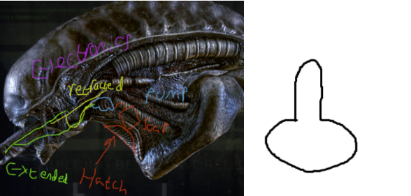
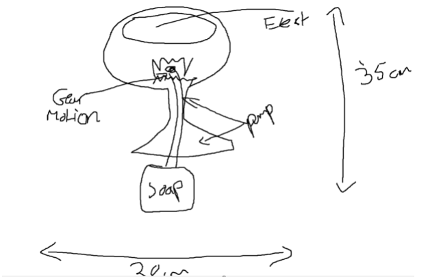
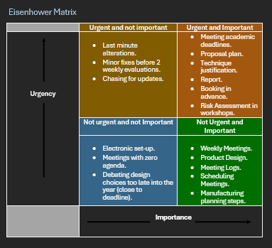
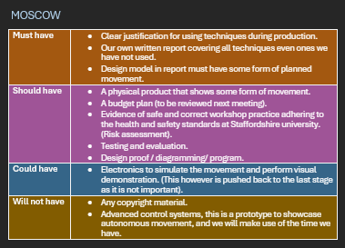
3D Modelling & Digital Prototyping
At the start of this phase, an early design of the skull had been created. New iterations of how the design would support given assembly and disposability were described at this stage too. As the skull needed headspace, the group decided that the top of the skull should be detachable for access to electronics and tubes for cleaning and maintenance purposes. The design team also printed off a Xenomorph tongue to show the scale and how the tongue would be fastened to the skull.
After a few discussions and iterations, a final design of the skull was brought forward. The design supports the idea of a headspace which will be held together by magnets. However, there was no mechanism designed at this stage yet. The only thing produced and showable was the skull and some documents. Hence began the design of the mechanism, the lid and the jaw.
Due to time constraints and the ambitiousness of the project, the next iterations of the skull would be needed to take forward. The possibility of doing small refinements and changes would still be there but nothing major about the skull wouldn't be able to be changed. In addition to this, due to the spring holidays coming up, some facilities and team members would not be reachable during this period.
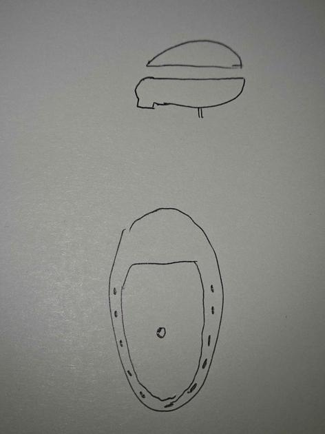
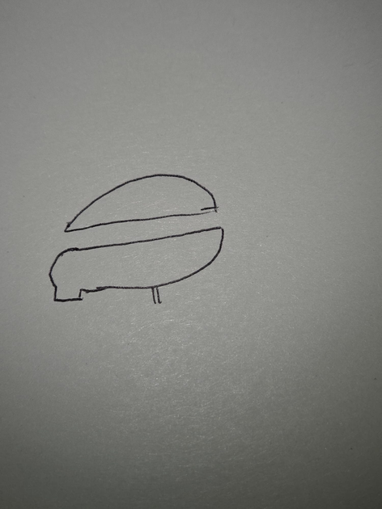
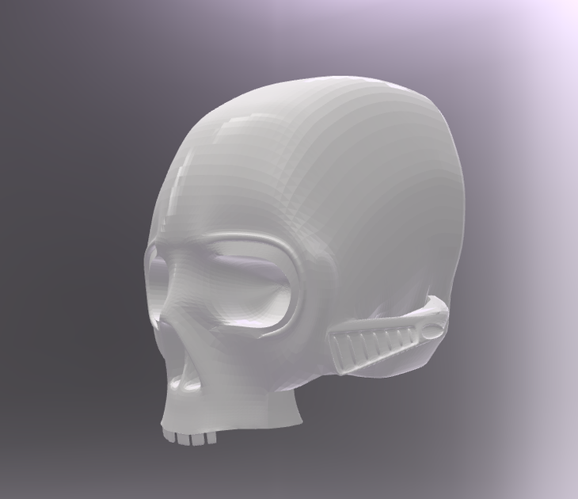
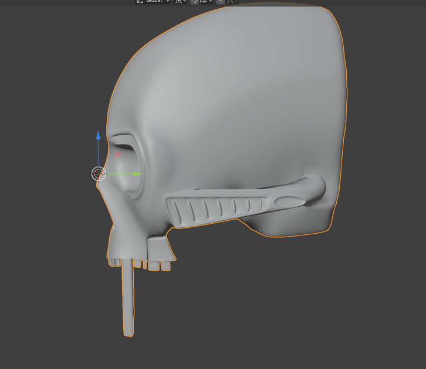
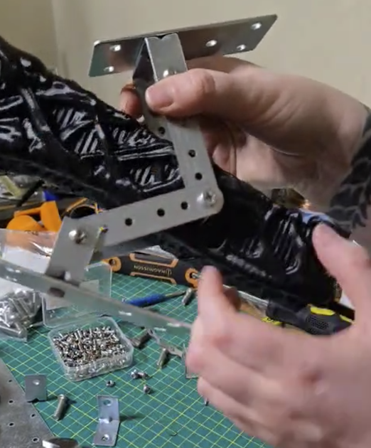
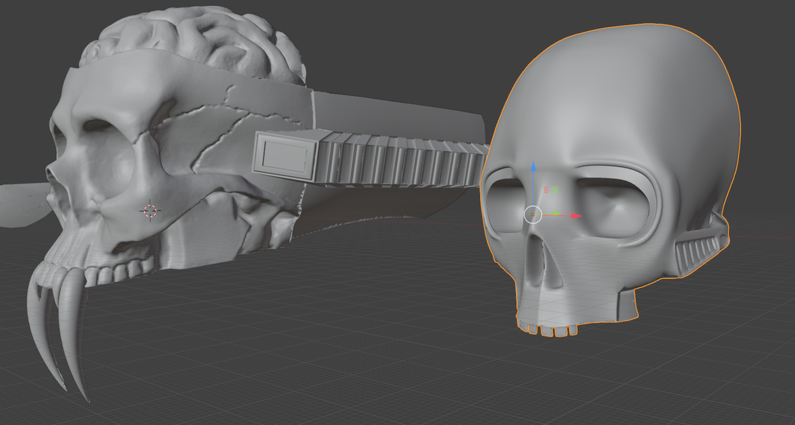
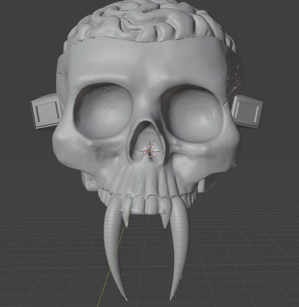
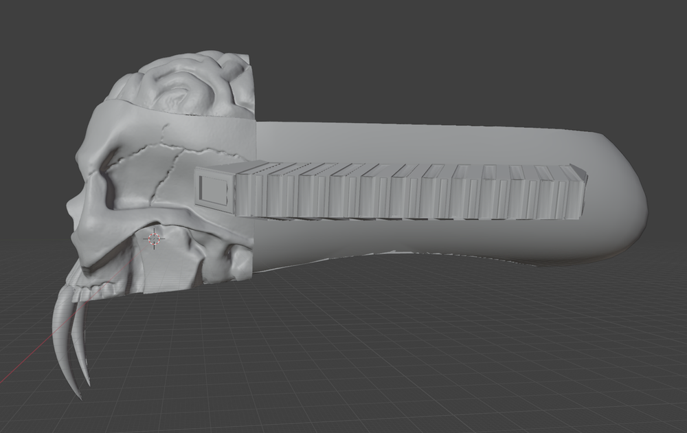
Final 3D Design Refinement
The group finished the final 3D design that is going to be printed. The problem at this stage was that the mechanism wasn't finished yet. The plan was to print this iteration of the skull and then figure out how to implement the mechanical joint from there. The prototype of the base had been brought and built with scrap wood, with a hinge door for refilling soap. The design of the base is as discussed in Phase 2 with some minor changes.
The Final 3D Design then also received multiple iterations to be compatible with the base. The group added a theme-appropriate, tendril-like throat which connected to a bracket. This bracket has a hole in it, and the tendrils also support the tubing from the soap to the head.
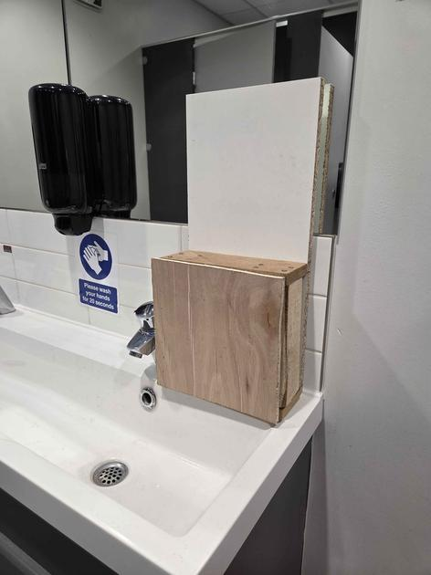
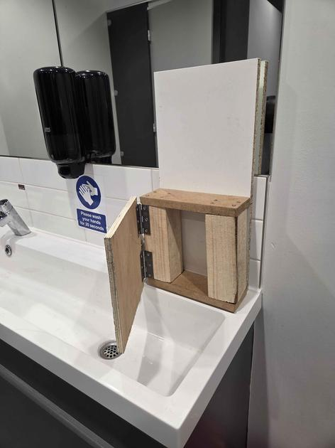
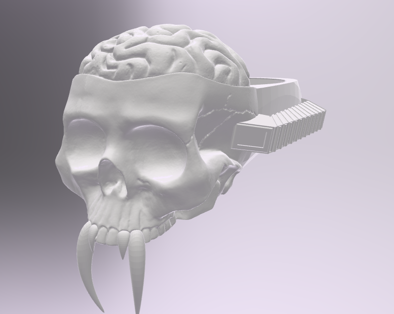
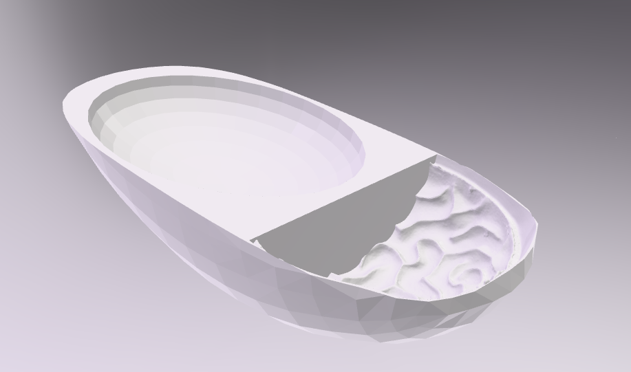
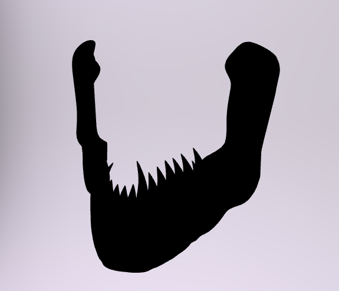
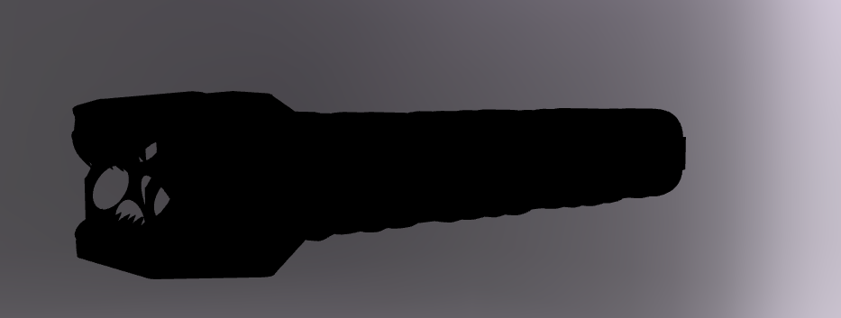
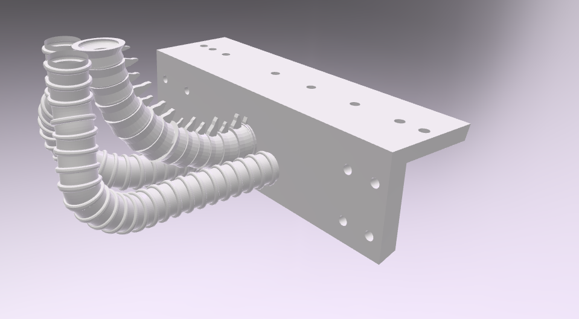
Manufacturing Attempt
The first attempt to get the artefact printing ended in failure. Roughly 30% through the print, issues with the PP filament came up. These were related to the age of the PP as it was in storage for an unknown prolonged time. The exact issues are not known to the group. The group then attempted to get a second print approved for budgeting however this ended in failure too. As a last resort, the group booked another printing with their own finances, but even with printing in PLA, due to the late submission of the print, the artefact would not get ready before the deadline.
The 3D printing team informed the group that the current way of printing the entire artefact would not work properly. The group needed to slice the 3D model into smaller parts and find a way to connect those. The solution was to use simple small holes which align with the other parts just like Lego.
At this stage, the group finalized the tongue mechanical joint. The idea is that when the jaw opens, it drives the tongue forward like a piston. The same is true for when the jaw closes. This hinders the tongue from getting stuck between the jaw and skull.
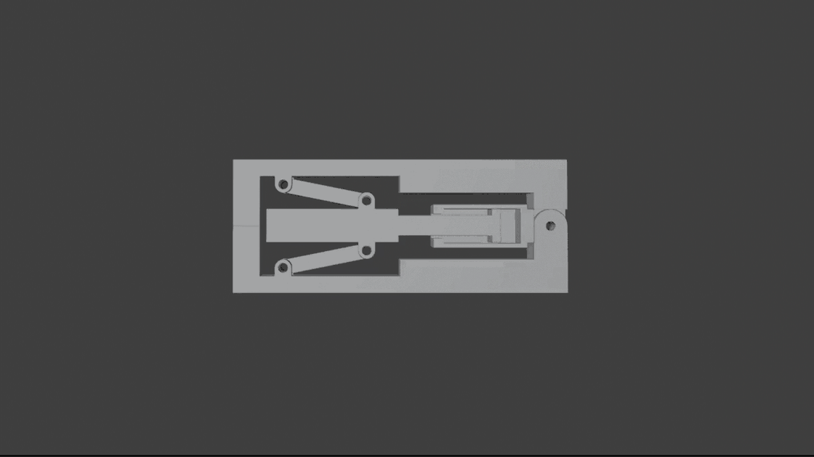
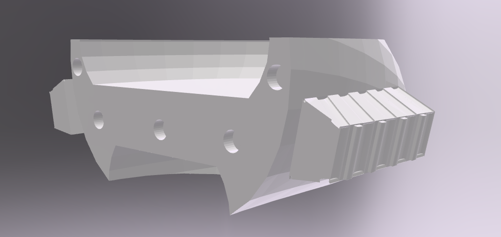
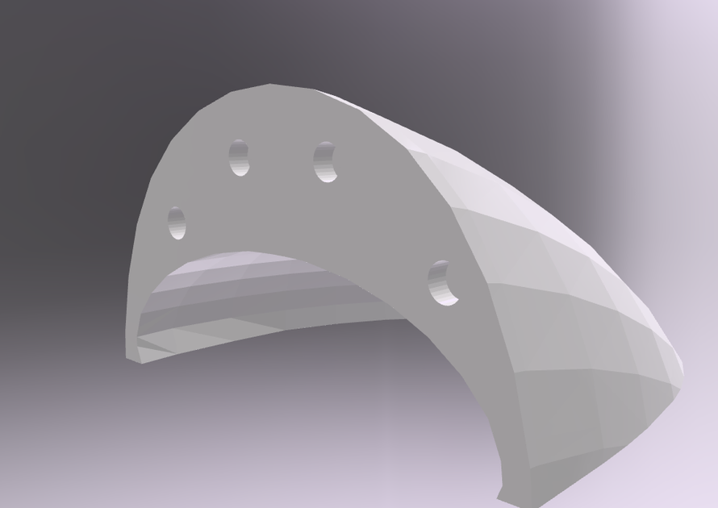
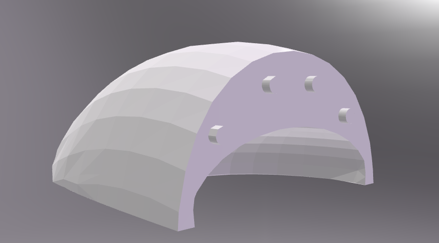
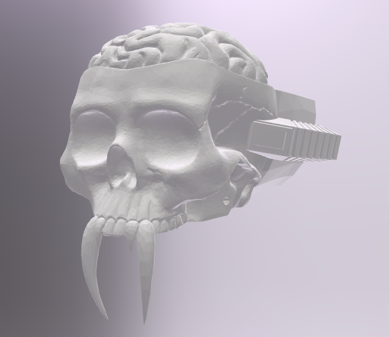
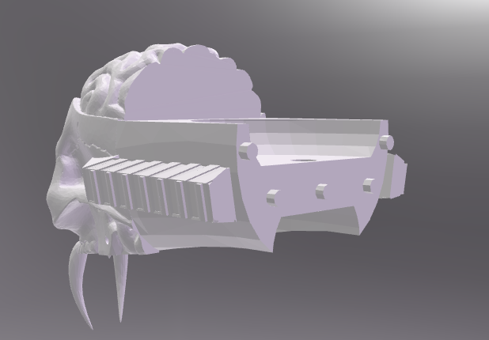
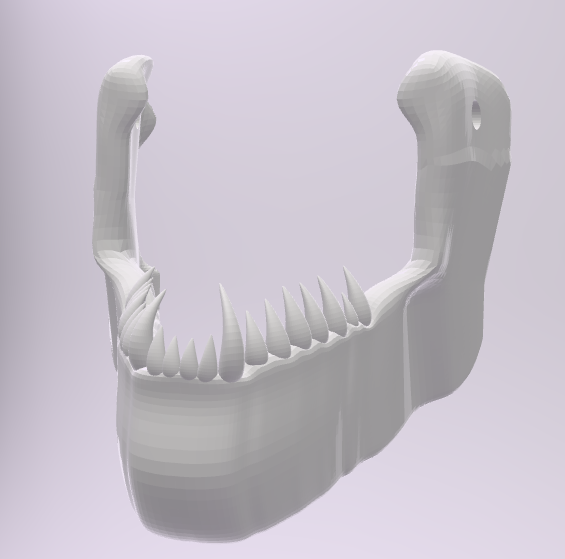
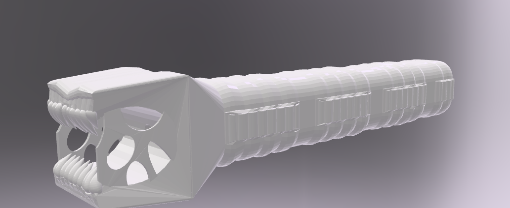
FINAL RESULT
GALLERY

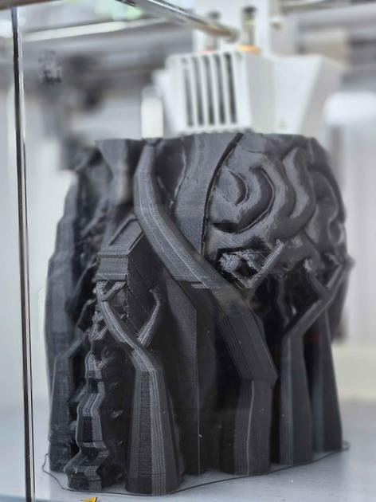
FINAL NOTES
Project Summary: This project shows the iterative nature of prototype development and the importance of adaptability in design. The transition from the initial design to a servo-driven piston mechanism showcased how practical constraints and team collaboration refine ideas into solutions. The shift from a wall-mounted to a standalone design was driven by electronic protection concerns, illustrating how real-world requirements directly influence engineering decisions.
Manufacturing Lessons: The manufacturing phase revealed lessons about design for manufacturability. The PP filament failure highlighted the importance of material storage and handling, which is an often overlooked detail but essential to success. Due to time constraints, PLA was used to attempt to speed up the printing process in an attempt to get a physical artefact before deadlines. The subsequent reading into modular segmentation transformed potential project failures into a valuable learning experience about optimizing designs for 3D printing capabilities.
What Worked Well: Hand sketching effectively pre-explored the design space before committing to CAD, preventing false starts. The magnetic housing concept proved elegant and provides maintenance access without fasteners. Building a wooden base prototype early showed integration issues before the full 3D design had been modelled. Blender's flexibility allowed transitions between artistic and mechanical designs. Team communication through annotated sketches kept all members aligned despite project complexity.
What Could Be Improved: More testing of materials could have prevented PP filament degradation issues. Physical prototype testing of the jaw mechanism, even a cardboard mockup, would have validated the piston concept before depending entirely on animations. Design should have started from the mechanism first, then built the skull around it, improving efficiency and providing scale earlier.
If We Started Again: We would start the artefact from the mechanism first, rather than designing the skull aesthetics and fitting mechanics afterwards. Building a working jaw mechanism prototype early, testing the servo range, force requirements, and position dynamics physically, would have provided a foundation for all design.
Key Learnings: Design for manufacturability is as critical as design for function. Mechanism design should be foremost in design, and digital simulation must be validated against physical reality.
REFERENCES
- ▶Xenomorph Design — Sophie Wood, Designing Fear in Alien: The Art of Giger’s Xenomorph, 2025. Link
- ▶Skeleton Design — Rambling Longbeard, Skeleton Warriors, Warhammer Unit Chronicles, 2023. Link
- ▶3D Printing — Shapeways, 3D Printing Materials: A Quick Guide to Nylon Plastics, 2021. Link
- ▶University Equipment — University of Staffordshire, 3D Factory. Link
IMAGE/STL SOURCES
- ▶img-phases/MissionBriefing-MainImage.png — Accessed 2026
- ▶img-phases/Phase01-*.png — Accessed 2026
- ▶img-phases/Phase02-*.jpg/png — Accessed 2026
- ▶img-phases/Phase03-*.jpg/png — Accessed 2026
- ▶img-phases/Phase04-*.png/gif — Accessed 2026
- ▶stl/Skeletron.stl - Accessed 2026